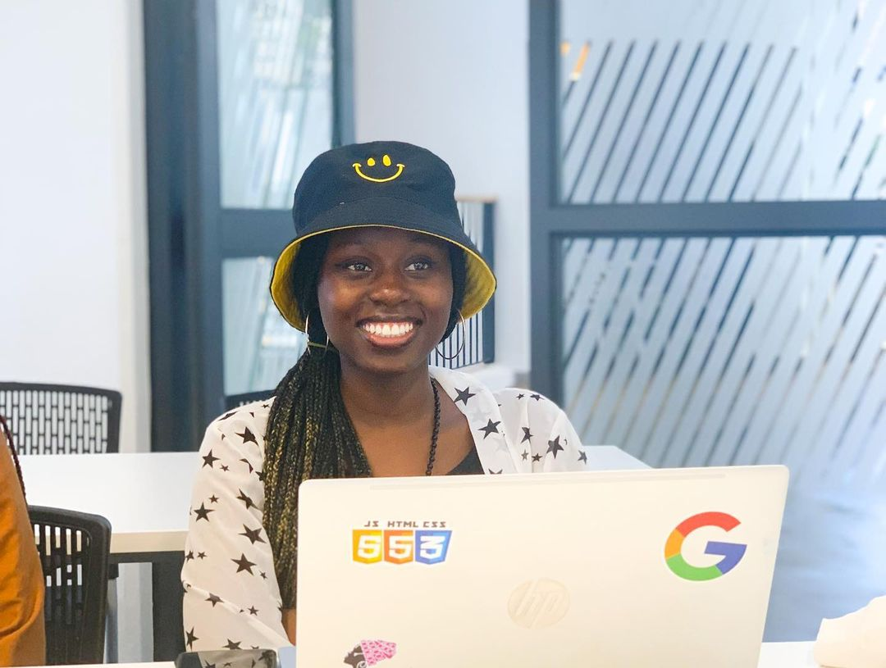

// Welcome, Kaabo, Ikaze, Una Welucome //
This is Climi's Webpage
About Me
Hi there! I'm Eunice Adewusi, a budding software engineer and global changemaker. My journey has been shaped by a commitment to harnessing technology for positive change.
Through my work as the founder of Female Youth Global Empowerment (FYGE) and The GRAWN Project formerly Team Oasis, I've empowered over 1,500 young minds and launched initiatives to bridge the gender gap in tech and combat climate change.
Now, I'm eager to contribute my technical prowess and communication skills to internships in Partnerships and Communications, or to dive deeper into the Software Engineering realm. With a proven track record in leadership, advocacy, and innovation, I'm excited to collaborate, learn, and create meaningful impact.